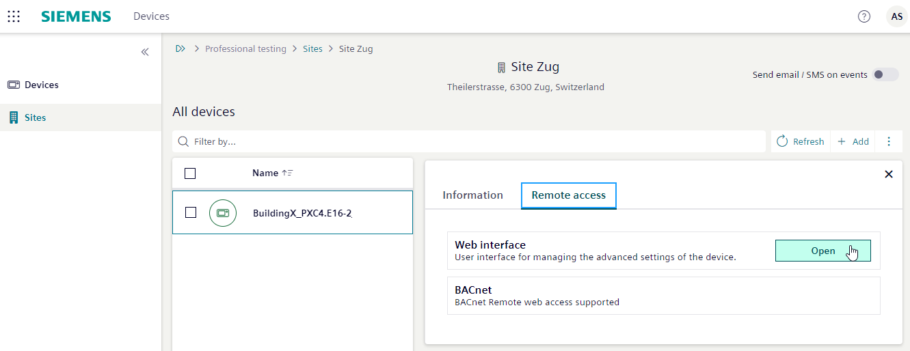
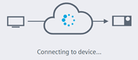
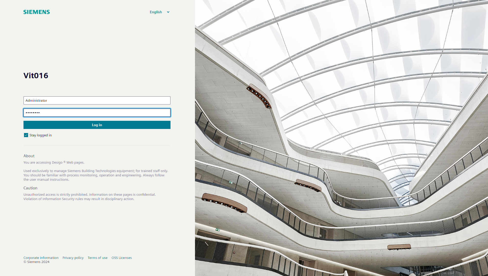

网页界面操作
这Web interface显示已配置设备的实例，用于在线调试和工程。
- The Devices application is open.
- The device list opens.
- Select Sites, then select the site from the list.
- Select the device.
- Select the Remote access tab.
- In the Web interface pane, select Open.

- Connecting is displayed.

- Enter the log-in information for the web interface.

- The web interface opens. Detailed operating functions in web interface is available in document A6V11938631 Web interface.

如果会话中没有活动，则会发生超时：必须重新输入密码。